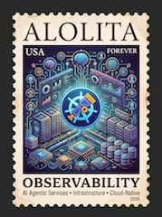

|

|
-
Site Overview & Focus:
alolitasharma.com serves as the personal blog and portfolio for Alolita Sharma, focusing on Software Engineering, Open Source, Open Standards, Observability, Search, Language Technologies.
-
Focus Areas:
-
Featured Articles & Posts:
-
Observability:
Highlights her leadership in developing and improving features in OpenTelemetry for metrics, tracing and logging, as well as contributions to OpenMetrics, Prometheus, Cortex and Jaeger.
-
OpenSearch & Open Distro for Elasticsearch:
Features announcements detailing the rollout, build scripts, and version updates for the open-source project.
-
Web Standards & NLP, I18n, L10n Technologies:
Discusses her contributions while at Amazon, Twitter and WMF participating in the W3C, as a co-chair of the Indic Language Task Force within the W3C I18N Working Group and other open source NLP libraries.
-
Cloud & Continuous Delivery:
Covers open-source contributions to Spinnaker, a cloud-based continuous delivery platform.
-
Community & Conferences:
Recaps her participation, speaking engagements and keynotes at major industry events.
-
Technology Boards, Organizations & Initiatives:
Lists her involvement with key open source organizations and industry consortia, including CNCF, LF, Unicode Consortium, OSI, W3C, Wikimedia Foundation, Wikidata and MediaWiki.
|